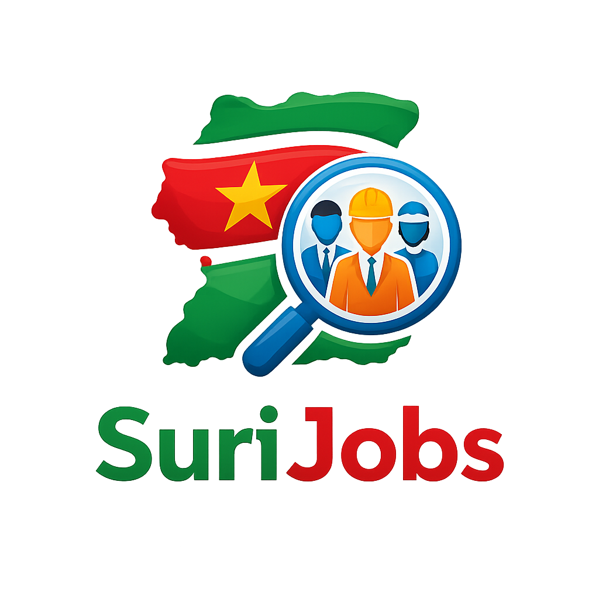
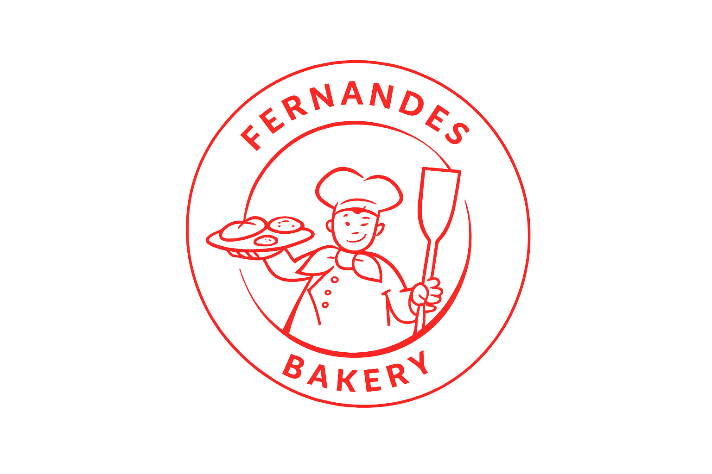
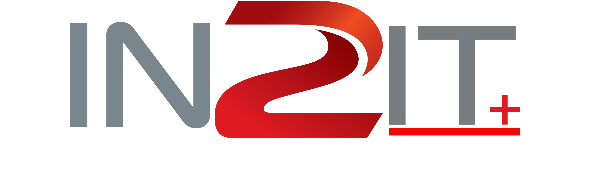

EXPERIENCE & PROJECTS
MediAlert Box was developed together with my classmates for a college project fair. We focused on challenges within the healthcare situation in Suriname and wanted to encourage people to take medication intake more seriously.
The concept included a smart medication box with reminders, scheduling features, a digital logbook, and remote monitoring options for family members or caretakers.

SuriJobs is a web application currently in development with the goal of creating a more accessible and centralized platform for job seekers in Suriname.
Users will be able to create profiles and receive job opportunities based on their personal information, skills, and situations. The platform is designed to make job searching easier, smarter, and more personalized.

At around 16 years old, I worked a vacation job at Fernandes Bakery from 6:00 AM until 2:30 PM during the summer period.
Through this experience, I developed communication skills, responsibility, and experience interacting with clients in a professional environment while staying productive during vacation.

I currently work for a small business called In2ItPlus, where I create digital designs using Canva and Photoshop.
My work includes designing products such as T-shirts, mugs, tumblers, stickers, and other personalized items. I am also responsible for assisting with website design and visual branding.
in2itplus.com